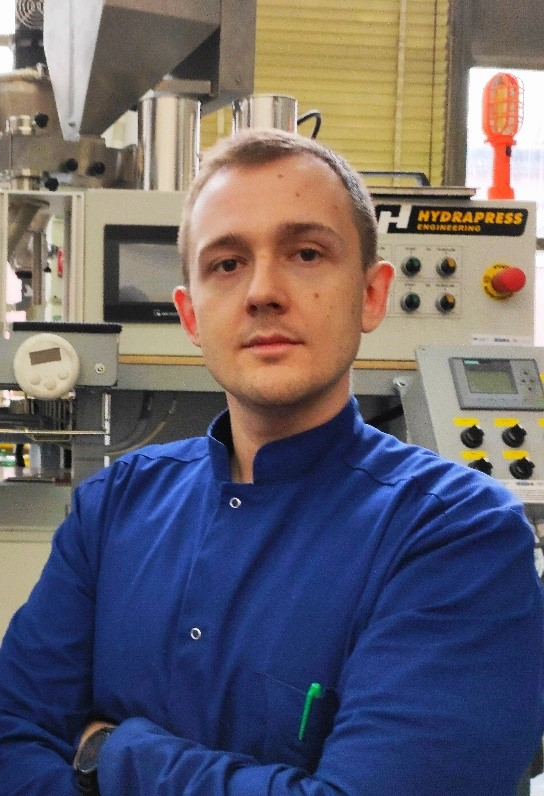

|  | Łukasz ZedlerResearch Assistant ProfessorGdańsk University of Technology Faculty of Chemistry Department of Molecular Biotechnology and Microbiology Kontakt |
| Daty | Opis |
|---|---|
| 2022 – obecnie | Stanowisko wykonawcy programu Platinium, w ramach programów IDUB, „Thermoplastics/ground tire rubber/carbon fillers systems – novel approach for development of low-cost flexible electronics with tailored performance properties” finansowanego przez Politechnikę Gdańską. |
| 2022 – obecnie | Stanowisko wykonawcy projektu Polsko-Chińska Współpraca Badawcza „Zrównoważony rozwój recyklingu zużytych opon poprzez funkcjonalizację” finansowanego przez Narodowe Centrum Badań i Rozwoju. |
| 2020 – 2021 | Stanowisko wykonawcy projektu Lider "Opracowanie technologii wytwarzania spienionych kompozytów poliuretanowo-gumowych do zastosowania w charakterze materiałów tłumiących" finansowanego przez Narodowe Centrum Badań i Rozwoju. | td>
2017 – 2020 | Uczestnik projektu badawczego „Innowacyjna technologia ciągłej dewulkacji gumy”, którego wnioskodawcą jest Recykl Organizacja Odzysku S.A. w ramach Działania 1.2: „Sektorowe programy badawczo-rozwojowe”. |
| 2016 – 2022 | Prowadzenie badań naukowych w tematyce regeneracji i zagospodarowania odpadów gumowych w Katedrze Technologii Polimerów Wydziału Chemicznego Politechniki Gdańskiej |
| Python ⭐ ⭐ | OriginLab ⭐ ⭐ |
| Znajomości technologii gumy i polimerów ⭐ ⭐ ⭐ ⭐ ⭐ | AutoCAD Inventor ⭐ ⭐ |